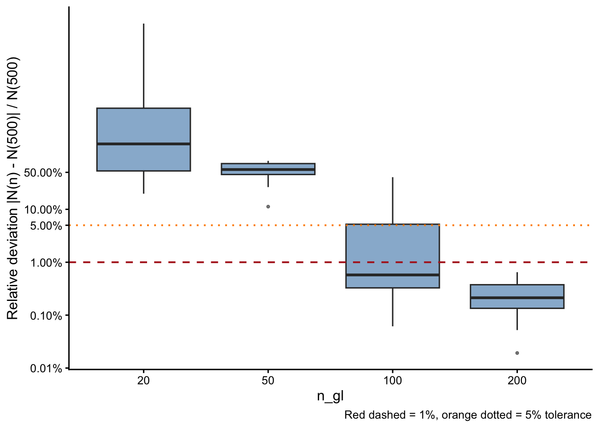
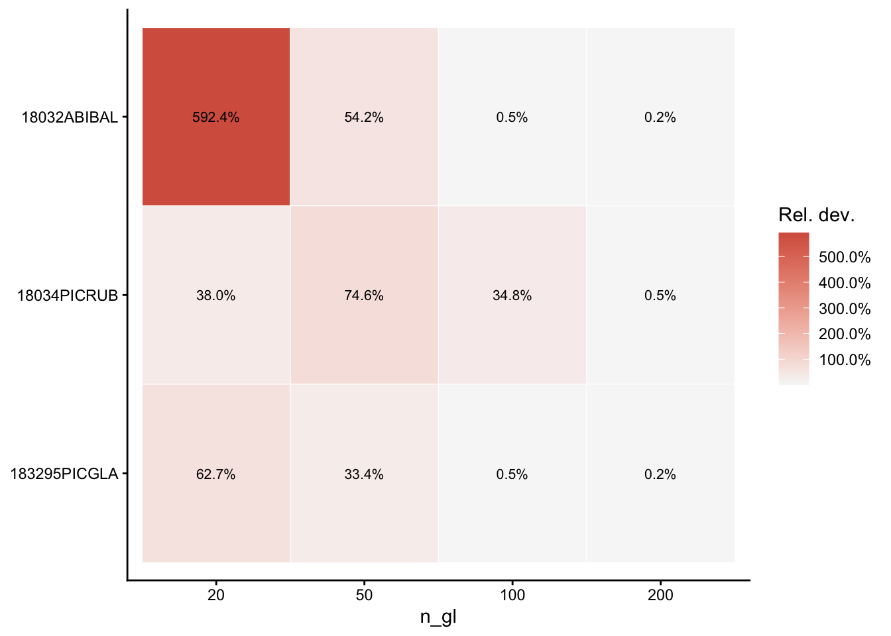
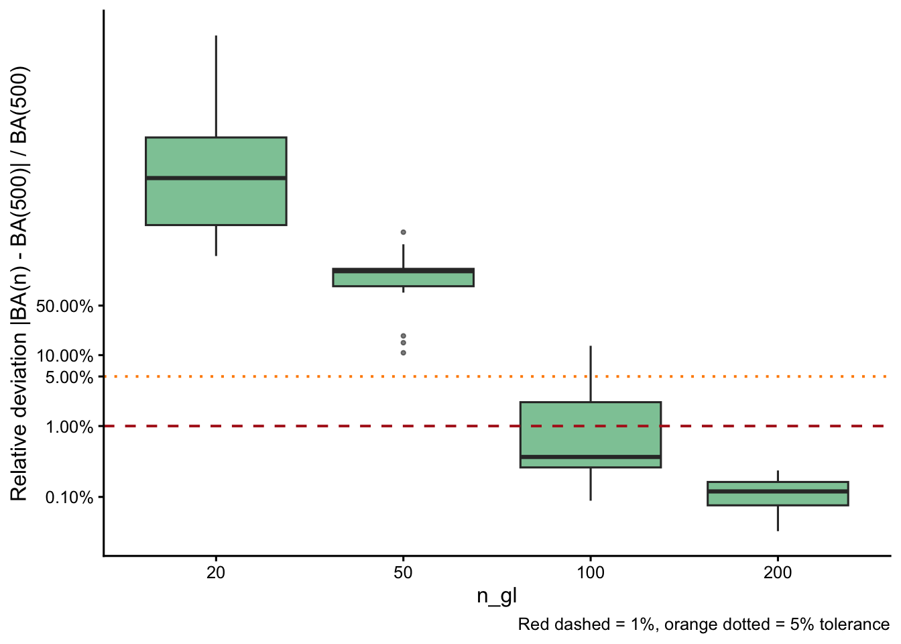
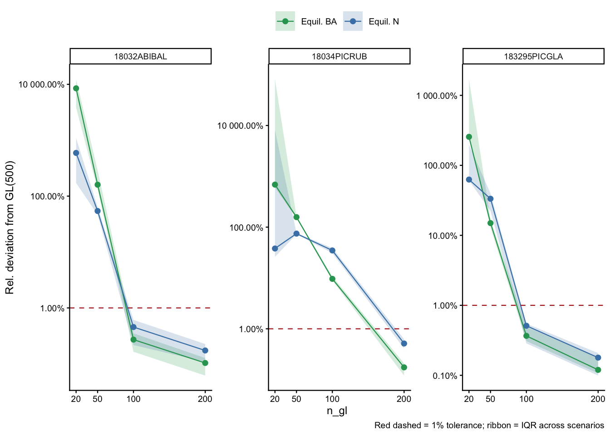
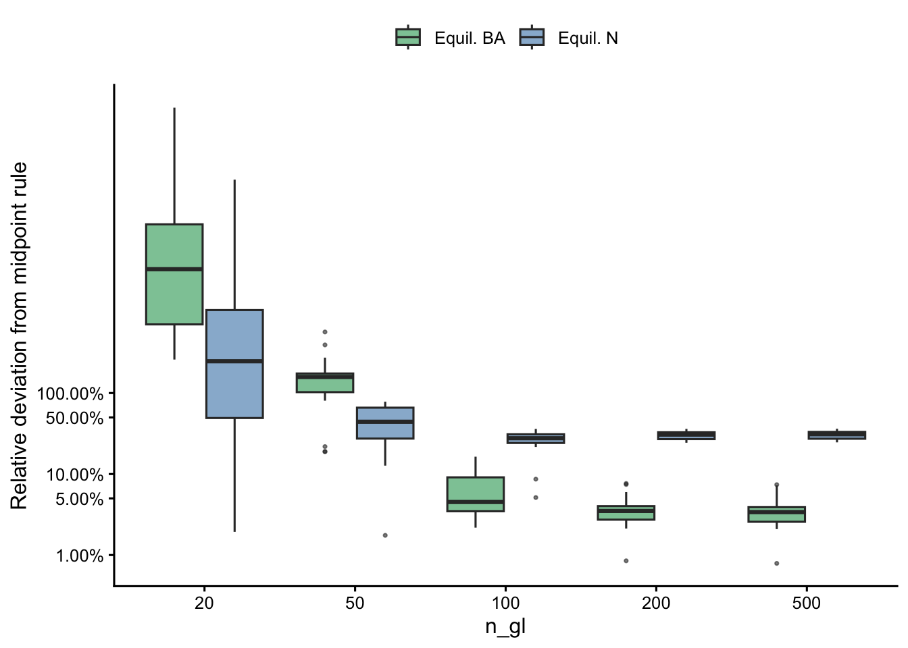

17 Gauss-Legendre Quadrature Convergence
The release of v1.0.1 of the {forestIPM} R package introduces a new integration approach: the Gauss-Legendre Quadrature — a spectral method that achieves exponential convergence for smooth integrands. The number of quadrature nodes (n_gl) controls the trade-off between accuracy and computational cost.
Because Gauss-Legendre quadrature exactly integrates polynomials of degree \(\leq 2n-1\), convergence for smooth kernels is typically achieved at modest \(n_{\text{gl}}\) values. In this chapter, we quantify that convergence empirically using Gauss-Legendre with \(n_{gl} = 500\) nodes as the reference.
Simulation design
Results were pre-computed by the compare_gl_N.R script:
- 15 stratified environmental scenarios drawn from 216 027 combinations of species × plot × climate.
- 100 Bayesian posterior parameter draws per scenario.
n_gltested: 20, 50, 100, 200, 500.- Reference: GL(500) (treated as truth for within-GL convergence).
- Metrics:
- Equilibrium \(N\) — total tree density after density-dependent projection (up to 500 yr, convergence tolerance \(10^{-6}\)).
- Equilibrium basal area (BA, m² ha⁻¹).
Convergence of equilibrium N
Relative deviation vs. GL(500)
Per-species deviation heatmap

Pass/fail at 5% tolerance
| n_gl | N scenarios | Pass (< 5%) | % Pass | Max dev. | Median dev. |
|---|---|---|---|---|---|
| 20 | 15 | 0 | 0.0% | 32 425.69% | 172.30% |
| 50 | 15 | 0 | 0.0% | 82.50% | 56.51% |
| 100 | 15 | 11 | 73.3% | 40.53% | 0.58% |
| 200 | 15 | 15 | 100.0% | 0.65% | 0.21% |
Convergence of basal area

Per-species convergence profiles
Each panel shows how both equilibrium N (blue) and BA (green) converge toward GL(500) as n_gl increases. The ribbon spans the IQR across the 15 scenarios × 100 parameter draws.

Species-specific convergence table
Minimum n_gl needed to reach < 1% and < 5% median relative deviation from GL(500), for both N and BA:
| Species | Min n_gl <1% (N) | Min n_gl <5% (N) | Dev @100 (N) | Dev @200 (N) | Min n_gl <1% (BA) | Min n_gl <5% (BA) | Dev @100 (BA) | Dev @200 (BA) |
|---|---|---|---|---|---|---|---|---|
| 18032ABIBAL | 100 | 100 | 0.45% | 0.17% | 100 | 100 | 0.27% | 0.10% |
| 18034PICRUB | 200 | 200 | 34.77% | 0.51% | 200 | 200 | 9.61% | 0.17% |
| 183295PICGLA | 100 | 100 | 0.51% | 0.18% | 100 | 100 | 0.37% | 0.12% |
Recommendation
Based on the convergence analysis (15 scenarios × 100 parameter draws, GL(500) as reference):
| n_gl | N: pass < 1% | N: pass < 5% | BA: pass < 1% | BA: pass < 5% | Recommended use |
|---|---|---|---|---|---|
| 20 | 0.0% | 0.0% | 0.0% | 0.0% | Exploration only |
| 50 | 0.0% | 0.0% | 0.0% | 0.0% | Fast screening |
| 100 | 73.3% | 73.3% | 73.3% | 73.3% | good balance |
| 200 | 100.0% | 100.0% | 100.0% | 100.0% | default Production |
Recommended defaults
- Population projections / equilibrium N and BA:
n_gl = 200is the recommended default. It matches GL(500) within 1% for 100.0% of N scenarios and 100.0% of BA scenarios. - Large-scale simulations (100 k+ runs):
n_gl = 100is a viable compromise; see species-specific tables for worst-case species. - Fast screening / exploration:
n_gl = 50is acceptable for qualitative comparisons only.
The current package default (n_gl = 200) is well-justified and does not need to be changed.
GL vs. midpoint rule
Even at GL(500) — which is converged within the GL family — the outputs differ systematically from the midpoint rule (h = 1 mm). This section quantifies that structural difference.
Overall deviation from midpoint

| n_gl | N: median dev. | N: max dev. | BA: median dev. | BA: max dev. |
|---|---|---|---|---|
| 20 | 246.77% | 43 133.07% | 3 379.06% | 333 626.33% |
| 50 | 44.20% | 78.19% | 157.86% | 567.67% |
| 100 | 27.68% | 36.00% | 4.52% | 16.38% |
| 200 | 30.68% | 36.06% | 3.51% | 7.64% |
| 500 | 30.99% | 36.22% | 3.38% | 7.39% |
Why N deviates more than BA
The two metrics respond differently because of how integration weights enter each quantity.
Equilibrium N is computed as
\[ N^* = \sum_i w_i\, n^*(x_i) \]
where \(w_i\) are quadrature weights and \(n^*(x_i)\) is the equilibrium size density. For GL nodes, the weights \(w_i\) are non-uniform — they are larger near the centre of the interval and smaller near the endpoints — whereas midpoint weights are all equal to \(h\). Because small trees are the most abundant size class and dominate total N, the unequal weighting of GL nodes in the small-size region directly shifts the integral of the density distribution, producing a systematic offset in \(N^*\) relative to the uniform midpoint bins.
Equilibrium BA is computed as
\[ \text{BA}^* = \sum_i w_i\, n^*(x_i)\, \pi \left(\frac{x_i}{2}\right)^2 \times 10^{-6} \]
The \(x_i^2\) term down-weights small trees and up-weights large trees. The large-tree region is where GL weights and midpoint weights are most similar (the midpoint bins are fine enough to approximate GL there), so the \(x^2\)-weighted integral is less sensitive to the quadrature scheme. As a result, the structural difference between GL and midpoint manifests more weakly in BA than in N.
In practical terms, GL and midpoint are computing fundamentally different discrete approximations of the same continuous integral. Neither is wrong; they converge to the same limit as resolution increases. However, at finite resolution, GL distributes nodes and weights optimally for smooth integrands, while midpoint uses uniform spacing. For population projections, this means that switching from midpoint to GL will always produce a step-change in equilibrium N and BA outputs, regardless of how large n_gl is. The magnitude of this step-change decreases slowly as GL resolution increases, but does not vanish at practical node counts.
Computational note
GL quadrature achieves the same within-family accuracy as the midpoint rule with far fewer nodes. For example:
- Midpoint (h = 1) for Quercus rubra (\(L_{\max} \approx 700\) mm) requires 573 bins; GL(100) uses only 100 nodes — a 5.7× reduction in matrix size (32.5× fewer matrix elements).
- Kernel matrix assembly and eigenvalue computation scale as \(\mathcal{O}(n^2)\) and \(\mathcal{O}(n^3)\) respectively, so the savings compound quickly with node count.
Methods summary
| Item | Value |
|---|---|
| GL algorithm | Golub-Welsch (Jacobi tridiagonal eigendecomposition) |
| C++ solver | Eigen::SelfAdjointEigenSolver via RcppEigen |
| Size domain | \([127\,\text{mm},\, L_{\max}]\) (species-specific \(L_{\max}\)) |
| Vital rate models | von Bertalanffy growth × logistic survival + log-linear recruitment |
| Within-GL reference | GL(500) |
| Midpoint rule | h = 1 mm (original integration method) |
| Scenarios | 15 stratified rows from 216 027 combinations |
| Draws per scenario | 100 Bayesian posterior samples |
| Convergence criterion | \(\|\Delta N / N\| < 10^{-6}\) for 10 consecutive steps |